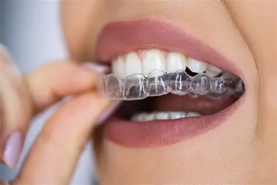

Clear Aligners
Straighten your teeth with complete invisibility and maximum comfort. No wires, no restrictions.

Invisible Braces for
Modern Lifestyles
Aligner is a revolutionary orthodontic treatment that uses a series of custom-made clear removable trays to straighten and align teeth comfortably and effectively
- Proclined Teeth – retrocline and reposition to proper alignment
- Crowded teeth – helps reposition overlapping teeth.
- Gaps between teeth – closes spaces for a uniform smile.
- Overbite, underbite, or crossbite – effectively corrects bite issues
- Rotated or twisted teeth – re-aligns teeth for a straighter smile.
- Relapse after braces – corrects teeth that have shifted after previous treatment due to improper use of retainers
Clear Aligners Process
Step 1
Book an appointment for consultation at V Cure Dental. Thorough dental examination will be done. Photographs and X-rays will be taken for treatment planning.
Step 2
Digital Scanning. An intraoral scan is performed using a handheld scanner. The digital scan is sent to the aligner center for processing.
Step 4
Use of retainer for a year and guided discontinuation of the retainer to prevent relapse.
Step 3
Aligners Ready for Use. Within a few days, you will receive perfectly fitting aligner trays ready for use.
Advantages Over Traditional Braces
100% Invisible
• Comfortable to wear, with no metal irritation and no food restrictions.
No Food Restrictions
Easy to remove and clean – helps maintain better oral hygiene.
Faster Results
Virtually invisible and more comfortable
Faster Results
Can be removed for eating, cleaning and flossing, hence there will not be a need for diet restriction.
Faster Results
Restores confidence as it will not be noticed by others
Faster Results
Fewer and shorter clinic visits
Frequently Asked Questions
Ready for your Smile Preview?
Book a digital scan today and see how your new smile will look in just minutes.